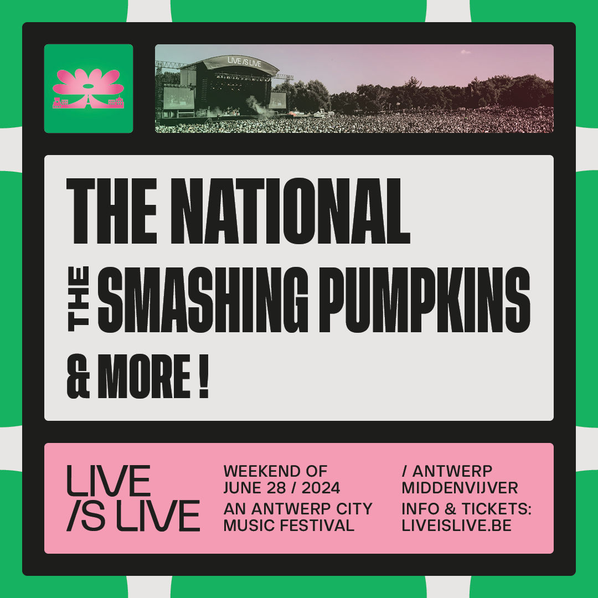
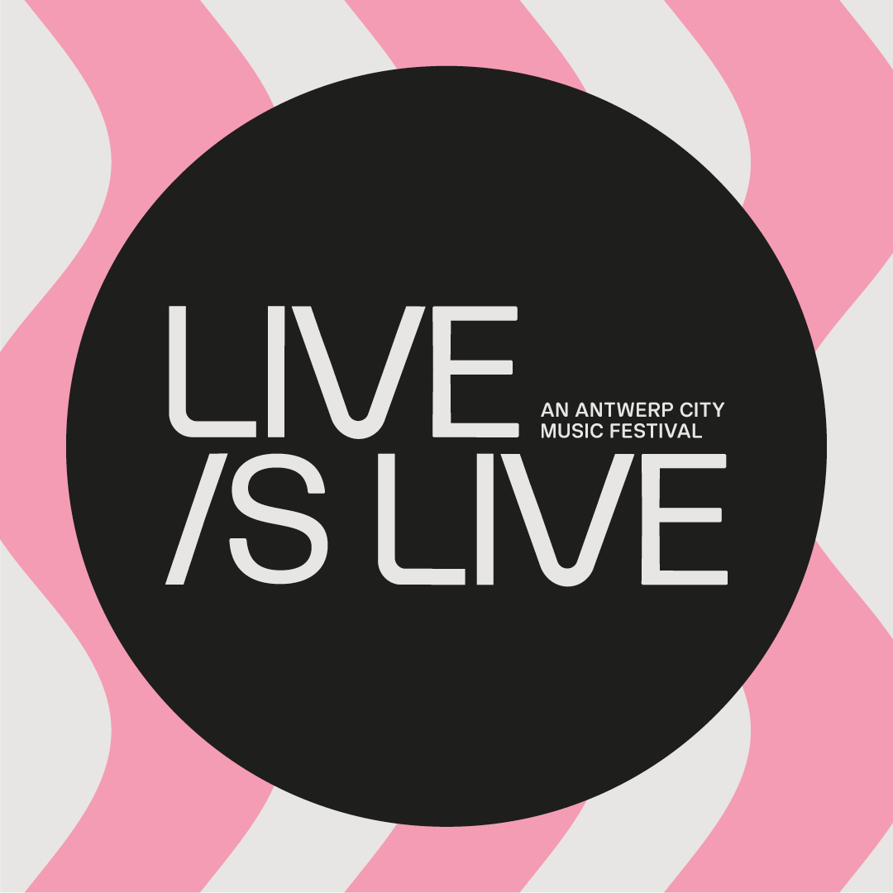

november 2023
Nieuw werk voor Live is Live • Een Antwerps stadsmuziekfestival
Terug naar de roots van muziekfestivals
We zijn enthousiast om te werken voor Live is Live, een Antwerps stadsmuziekfestival. Samen met het team van FKP Scorpio werkten we aan een nieuwe merkstrategie. We fristen ook de bestaande art direction op om het merk helemaal tot leven te brengen.
Beleef de magie van Live is Live, een driedaags muziekfestival in het Middenvijverpark op Linkeroever in Antwerpen. Dompel jezelf onder in good vibes, good times en optredens van wereldklasse. Start je zomer met een authentieke line-up, vrienden en een relaxte festivalsfeer. Geniet van legendarische acts en ultiem comfort voor een unieke, zorgeloze totaalbeleving.
Herontdek de originele festivalvibe en keer samen met ons terug naar de festivalervaring zonder al die extra toeters en bellen.
Live is Live heeft een missie: de festivalervaring herdefiniëren voor muziekliefhebbers die op zoek zijn naar meerwaarde. Alles draait om een uitzonderlijke beleving waarin de bezoekers en de muziek centraal staan. Met een niet-aflatende focus op zorgeloos genieten, comfort en oog voor detail wil Live is Live terugkeren naar de roots van muziekfestivals.
De nieuwe website is gelanceerd. Hou ons in de gaten voor de volledige line-up!

